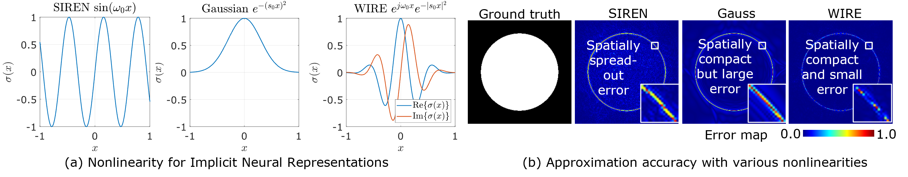
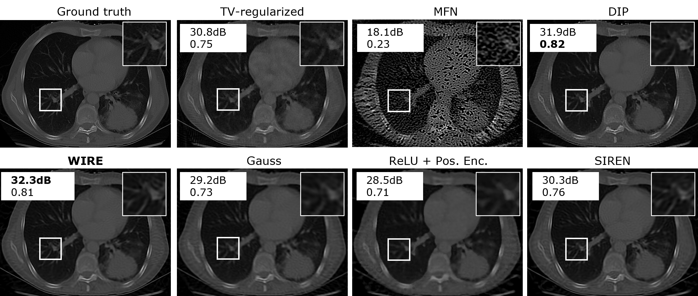
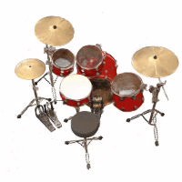
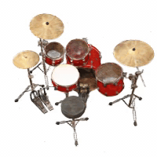
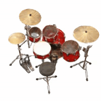
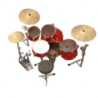

We propose a new nonlinearity for implicit neural representations (INRs) based on the continuous complex Gabor wavelet that has high representation capacity for visual signals. (a) visualizes two commonly used nonlinearities: SIREN with sinusoidal nonlinearity and Gaussian nonlinearity, and WIRE that uses a continuous complex Gabor wavelet. WIRE benefits from the frequency compactness of sine, and spatial compactness of a Gaussian nonlinearity. (b) shows error maps for approximating an image with strong edges. SIREN results in global ringing artifacts while Gaussian nonlinearity leads to compact but large error at edges. WIRE produces results with the smallest and most spatially compact error. This enables WIRE to learn representations rapidly and accurately, while being robust to noise and undersampling of data.
Abstract
Implicit neural representations (INRs) have recently advanced numerous vision-related areas. INR performance depends strongly on the choice of activation function employed in its MLP network. A wide range of nonlinearities have been explored, but, unfortunately, current INRs designed to have high accuracy also suffer from poor robustness (to signal noise, parameter variation, etc.). Inspired by harmonic analysis, we develop a new, highly accurate and robust INR that does not exhibit this tradeoff. Wavelet Implicit neural REpresentation (WIRE) uses as its activation function the complex Gabor wavelet that is well-known to be optimally concentrated in space-frequency and to have excellent biases for representing images. A wide range of experiments (image denoising, image inpainting, super-resolution, computed tomography reconstruction, image overfitting, and novel view synthesis with neural radiance fields) demonstrate that WIRE defines the new state of the art in INR accuracy, training time, and robustness.
Denoising
A powerful feature uniquely enabled by WIRE is the robustness to noisy data. Here, we show an image representation with added shot noise, resulting in an input PSNR of 17.6dB. Among the various approaches, WIRE results in the highest PSNR and SSIM of any representation, thereby naturally resulting in denoising.
Multi-image super-resolution
INRS are particularly appealing for handling data on an irregular grid, such as images captured with multiple sub-pixel shifts. The figure above shows 4X super resolution with 4 images captured with varying sub-pixel shifts and rotations. We then solved a joint inverse problem where the high resolution image is modeled as the output of an INR. WIRE produces the best reconstruction both quantitatively and qualitatively, implying that WIRE has favorable interpolation properties for visual signals.
Computed Tomography (CT) reconstruction

Inverse problems with noisy undersampled data require a strong signal prior for robust reconstruction. Here, we show CT-based reconstruction with 100 angles for a 435x326 image (4X compression) with various approaches. WIRE results in sharp reconstruction, exposing features that are blurry, or with ringing artifacts in reconstructions with other approaches. WIRE is hence a strong signal prior for images, and can solve a large class of inverse problems.
Neural radiance fields (NeRF)

WIRE (24.5dB)

SIREN (24.4dB)

Gauss (22.4dB)

ReLU + Positional Encoding (20.9dB)INRs have shown most promise in novel-view synthesis with sparse number of views. Here, we show that WIRE is well-suited for novel-view synthesis, where we use only 25 out of 100 training imagesto train the radiance field. WIRE not only achieves higher accuracy (+0.1dB) with fewer epochs, but captures details that are missed out by other nonlinearities.
Cite
@inproceedings{saragadam2023wire,
title={WIRE: Wavelet Implicit Neural Representations},
author={Saragadam, Vishwanath and LeJeune, Daniel and Tan, Jasper and Balakrishnan, Guha and Veeraraghavan, Ashok and Baraniuk, Richard G},
booktitle={Conf. Computer Vision and Pattern Recognition},
year={2023}
}